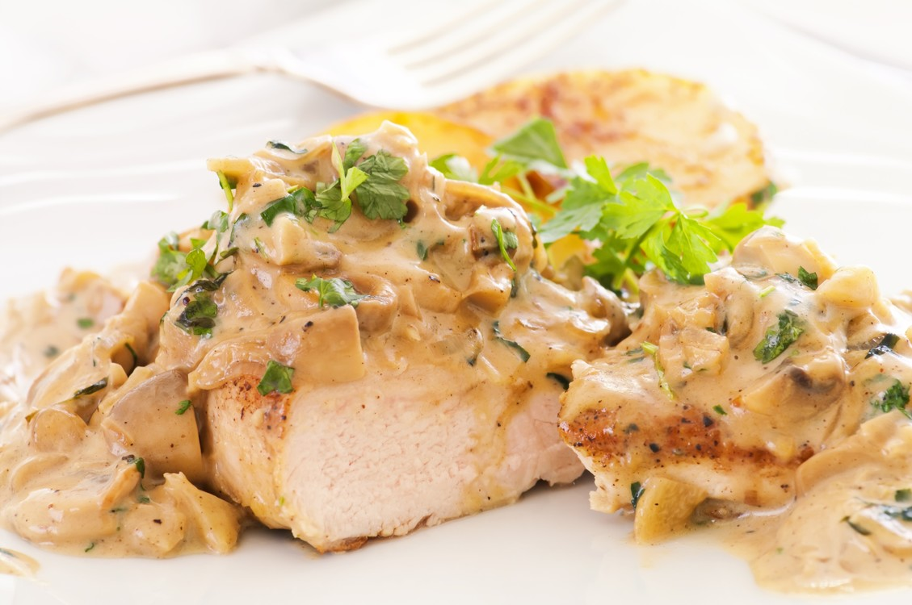

Chicken with muschrooms recipe

Description:
Chicken with mushrooms is a comforting and flavorful dish made with tender chicken breast cooked
in a creamy mushroom sauce. It's a popular homemade meal that can be served with rice,
mashed potatoes, or pasta. Easy to prepare.
Ingredients:
- 2 boneless, skinless chicken breasts
- 1 cup mushrooms (sliced)
- 1 small onion (chopped)
- 2 cloves garlic (minced)
- 1/2 cup heavy cream or cooking cream
- 1/2 cup chicken broth or water
- 2 tablespoons olive oil or butter
- Salt and pepper to taste
- Fresh parsley (optional, for garnish)
Steps:
- Prepare the Chicken:
- Cut the chicken breasts in half horizontally (butterfly) or into thin fillets.
- Season both sides with salt and pepper.
- Cook the Chicken:
- Heat 1 tablespoon of oil or butter in a large skillet over medium-high heat.
- Cook the chicken for 4-5 minutes per side, or until golden and cooked through. Remove and set aside.
- Saute Onion and Garlic:
- In the same pan, add a little more oil or butter if needed. Sauté the chopped onion for 2-3 minutes,
then add the garlic and stir for 1 more minute.
- Add the Mushrooms:
- Add the sliced mushrooms to the pan. Cook for about 5-6 minutes, stirring occasionally,
until they release their juices and turn golden.
- Make the Sauce:
- Pour in the chicken broth and let it simmer for 2 minutes.
Then add the cream and stir until the sauce is well combined.
Let it cook for another 3-5 minutes, until it thickens slightly.
- Combine and Finish
- Return the chicken to the pan and spoon some sauce over the top.
Let it simmer for 2-3 more minutes to absorb the flavors.
- Serve:
- Garnish with chopped parsley and serve hot with rice, mashed potatoes, or pasta.
Home